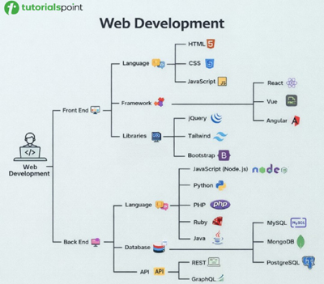
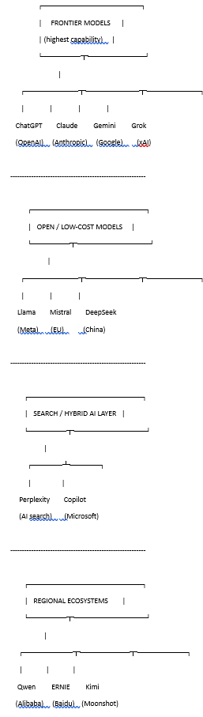

|
|


Here's how you build an AI application:AI applications are transforming any business where employees work from a computer/tablet/phone/etc. No longer does an organization need to worry about installing complicated applications on devices and getting them to work together. Everything is handled on the backend. This enables AI to perform the bulk of the work on behalf of the operator/employee. For example, an accounting firm now provides a simple interface to the worker, who then feeds the AI model operating in the background the appropriate source documents. The worker then receives the results—a tax return, a balance sheet, a quarterly report, whatever. To continue with this example, tax preparation by a firm like H&R Block now employs accountants and CPAs merely to ensure that the AI model is operating properly. The employees working on the front lines become vastly more productive, and there are fewer of them required. The customer gets a lower price for the service. To remain competitive, every business will need to move to this model of work.
- JavaScript frontend: the conversation interface
- Node.js backend: the coordinator/gatekeeper
- AI API: the "brain"
The following topics are useful for full-stack developers and AI Forward Deployed Engineers (FDEs). FDEs take an off-the-shelf LLM and integrate it into a custom agentic workflow that fits particular business needs. The information and examples here are currently OpenAI (ChatGPT) heavy, but I plan to add more information about other off-the-shelf AI products as I experiment with them more, and as time allows.